人工智能芯片与系统¶
Lecture 1：Introduction¶
Amdahl's Law¶
f:parallelizable fraction of a program
N:number of processors
$$
Speedup=\frac{1}{1-f+\frac f N}
$$
Roofline model¶
Arithmetic intensity(AI):AI=total flops/total memory bytes
AI describes per memory byte float compute number
high AI:compute-bound(matrix multiplication),low AI:memory-bound(vector addition)
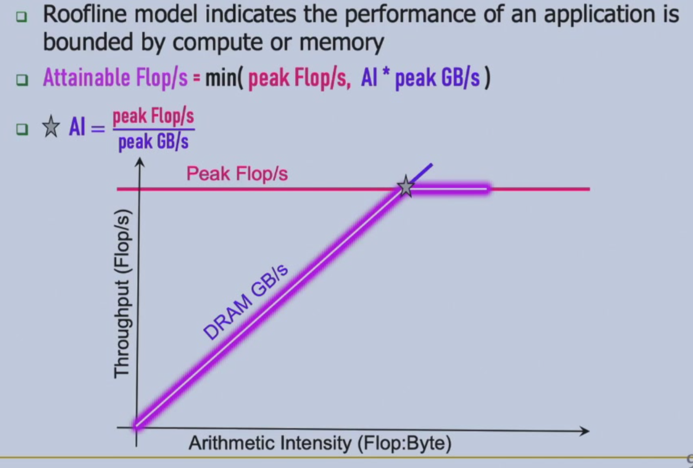
peak flop/s:fused multiply-add + vectorization code
memory model:Cache > HBM > DRAM
Real Gflop/s \(\le\) AI * DRAM GB/s
Little's Law¶
\(L=\lambda * W\)(buffer size = throughput * latency)
throughput:12GB/s,latency:100ns,buffer size = 100ns * 12GB/s=120B
Lecture 2: Reorder buffer¶
Lecture 3: Out-of-order CPU + Tomasulo¶
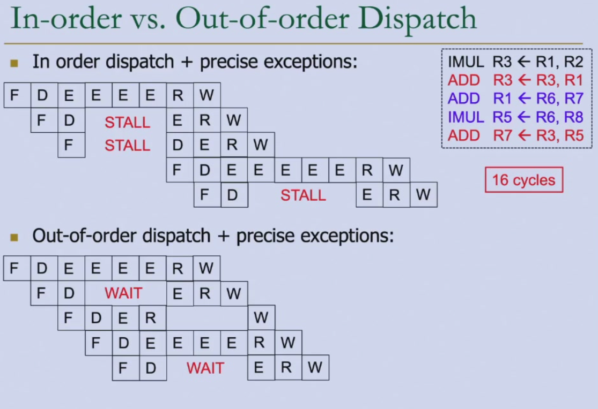
note that in in-order dispatch(upper-case),instruction 3 has to wait until instruction 2 to come out of ID phase.Before that,it cannot get into ID phase.
also,instruction 4 can get into IF phase only after instruction 3 come out of IF phase
Lecture 4: CPU Superscalar + SIMD¶
Lecture 5: Memory¶
small capacity,large bandwidth,small latency:SRAM HBM DDR SSD DISK:large capacity,small bandwidth,large latency
fast,expensive:Flip-Flop SRAM DRAM SSD(flash memory):slow,cheap
SRAM(cache):buffering data on chips,allow random access with low capacity
application:cache in CPU,shared memory in GPU,on-chip buffer in AI accelerator
HBM(High Bandwidth Memory) DRAM(very high bandwidth with high price and low flexibility,low capacity) vs. DDR DRAM
HBM is vertically stacked with very many joints(接口/电气连接点) between layers for large bandwidth,but difficult for highly stacking,causing low capacity
Lecture 6: GPU architecture¶
CPU vs. GPU:
- few complex cores vs. lots of small cores
- large cache vs. small cache
- large and slow memory vs. small and fast memory
CPU(sequential or modestly parallel) -> GPU(massively parallel) -> CPU
hardware execution model for GPU,CUDA(Compute Unified Device Architecture) programming model for thread block
GPU memory capacity does not scale well because HBM is physically stacked and tightly coupled with the GPU, making it expensive and difficult to increase capacity without redesigning the entire module.
Programming model¶
thread->thread block->grid
SPMD:single programme multiple data
for(i=0;i<N;i++)
C[i] = A[i] + B[i];
//SISD
//SIMD:vector instruction
VLD A->V1
VLD B->V2
VADD V1+V2->V3
VST V3->C
//SPMD
//CUDA
float serialFunction(...);
__global__ void kernel(...);
main()
cudaMalloc((void**)&d_in, #bytes);
cudaMemcpy(d_in, h_in, #bytes, cudaMemcpyHostToDevice);
kernel<<< #blocks, #threads >>>(args);
cudaFree(d_in);
//CPU
void vecadd(float* A,float* B,float* C,int N){
//1.allocate GPU memory
float *A_d, *B_d, *C_d;
cudaMalloc((void**) &A_d, N*sizeof(float));
cudaMalloc((void**) &B_d, N*sizeof(float));
cudaMalloc((void**) &C_d, N*sizeof(float));
//2.copy data to GPU memory
cudaMemcpy(A_d, A, N*sizeof(float), cudaMemcpyHostToDevice);
cudaMemcpy(B_d, B, N*sizeof(float), cudaMemcpyHostToDevice);
//3.perform computation on GPU
const unsigned int numThreadsPerBlock = 512;
const unsigned int numBlocks = (N + numThreadsPerBlock - 1)/numThreadsPerBlock; // size of input is not a multiple of number of threads per block
vecadd_kernel<<<numBlocks, numThreadsPerBlock>>>(A_d,B_d,C_d,N);
//4.copy data from GPU memory
cudaMemcpy(C, C_d, N*sizeof(float), cudaMemcpyDeviceToHost);
//5.deallocate GPU memory
cudaFree(A_d);
cudaFree(B_d);
cudaFree(C_d);
}
//GPU
__global__ void vecadd_kernel(float* A,float* B,float* C, N) {
int i = blockDim.x*blockIdx.x+threadIdx.x;
if(i<N){ //size of input is not a multiple of number of threads per block
C[i] = A[i] + B[i];
}
}
girdDim.x, blockDim.x, blockIdx.x, threadIdx.x//CPU
void add_matrix(float* a,float* b,float* c,int N) {
int index;
for(int i=0;i<N;++i)
for(int j=0;j<N;++j){
index = i + j * N;
c[index] = a[index] + b[index];
}
}
int main(){
add_matrix(a,b,c,N);
}
//GPU
__global__ add_matrix(float* a,float* b,float* c,int N){
int i = blockIdx.x * blockDim.x + threadIdx.x;
int j = blockIdx.y * blockDim.y + threadIdx.y;
int index = i + j * N;
if(i<N && j<N)
c[index] = a[index] + b[index];
}
int main(){
dim3 dimBlock(blocksize, blocksize);
dim3 dimGrid(N/dimBlock.x,N/dimBlock.y);
add_matrix<<<dimGrid, dimBlock>>>(a,b,c,N);
}
Why warps and SIMT?Reduce GPU scheduling overhead
thread block:logic scheduling unit defined by programmer
warp:execution unit determined in GPU hardware
SIMD(vector) is a single sequential instruction stream
SIMT is multiple instruction streams of scalar instructions
SIMT can treat each thread separately and can group threads into warps flexibly
//divergence-free execution
compute(threadIdx.x);
if(threadIdx.x<32) //remember 32 threads per warp
Do_this(threadIdx.x * 2);
else
Do_that((threadIdx.x%32)*2+1);
Lecture 7: GPU optimization¶
GPU memories¶
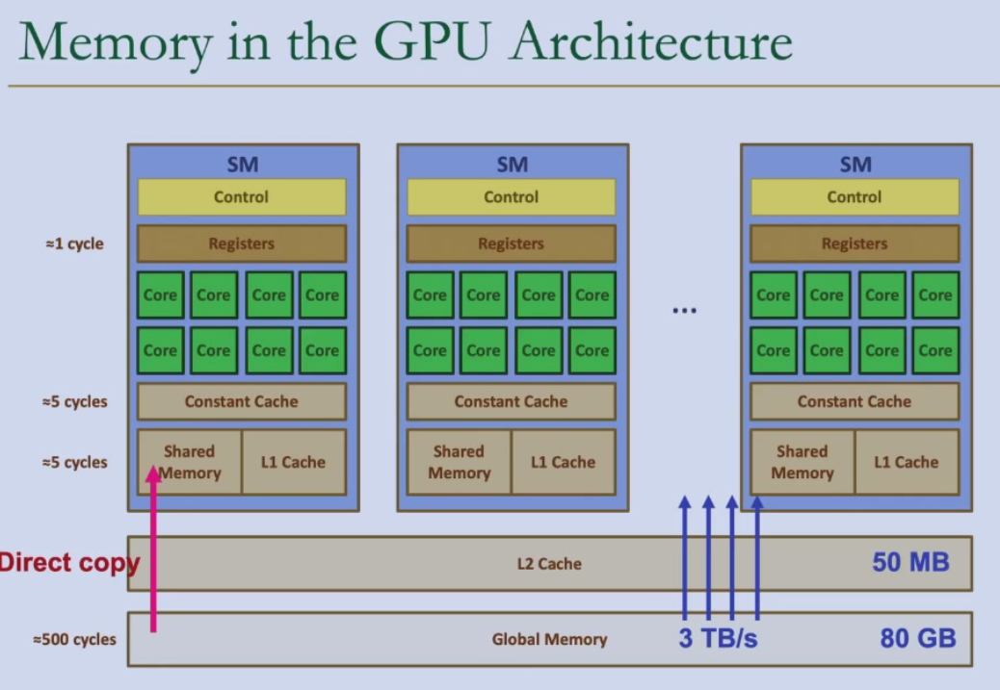
int LocalVar;
int LocalArr[N];
__device__ __shared__ int SharedVar;
__device int GlobalVar;
__device__ __constant__ int ConstantVar;
DRAM subsystem¶
Bank operation
Long global memory access latency
Multi-threading¶
FGMT(Fine-Grained Multi-Threading) helps hide long latency operations(memory access)
occupancy:ratio of active warps to maximum number of warps per core
other warps execute instructions(activate more warps) when certain warps are waiting for memory access
Memory Coalescing¶
only one DRAM transaction is needed if threads in the same warp access consecutive memory locations in the same burst
we want to satisfy warps,this is vertical to CPU
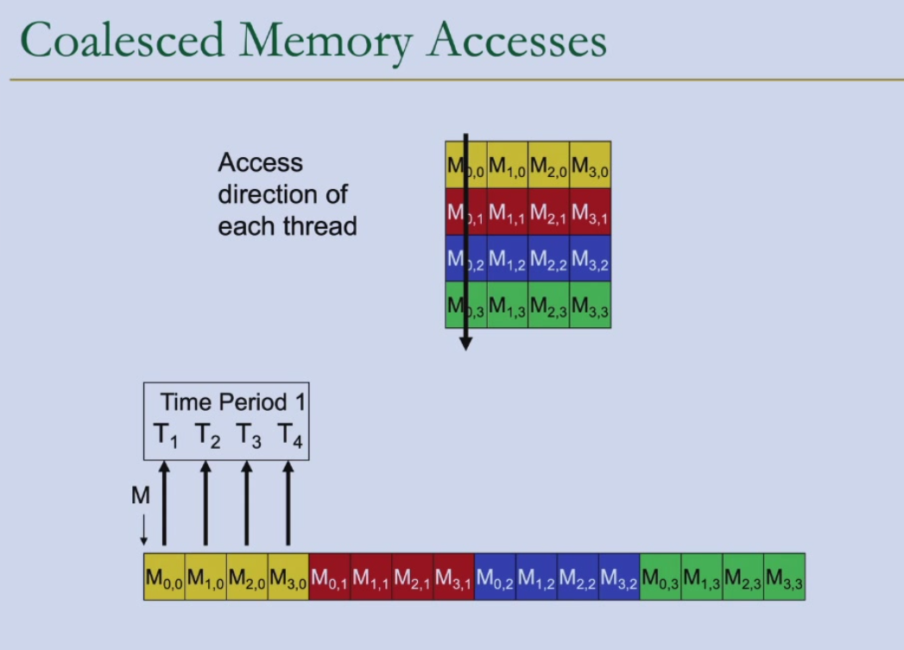
对一个warp的前四个线程 M0,0->M3,0:thread 0：[0,0],thread 1:[1,0],thread 2:[2,0],thread 3:[3,0],addr = 0,4,8,12,not consecutive
M0,0->M0,3:thread 0：[0,0],thread 1:[0,1],thread 2:[0,2],thread 3:[0,3],addr = 0,1,2,3,consecutive
在 C/C++/CUDA（行优先）中：threadIdx.x 对应 col 索引 → Coalesced
在 C/C++/CUDA 中：threadIdx.x 对应 row 索引 → Uncoalesced
Shared memory¶
shared memory is an interleaved/banked memory
32 banks in NVIDIA GPUs
bank conflict free if 32 threads and 32 banks correspond each other one-to-one(though random accessing)
reducing bank conflict:
- padding
- randomzied mapping
- hash functions
data reuse:tiliing
cut data into tiles and load into shared memory,threads can access shared memory with only one DRAM access
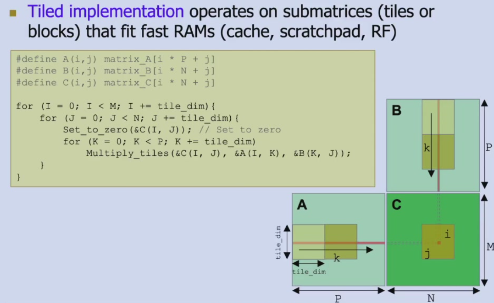
GPU matrix multiplication
__global__ void mm_kernel(float* A,float* B,float* C,unsigned int N) {
unsigned int row = blockIdx.y*blockDim.y+threadIdx.y;
unsigned int col = blockIdx.x*blockDim.x+threadIdx.x;
float sum = 0.0f;
for(unsigned int i = 0;i < N; ++i) {
sum += A[row*N + i]*B[i*N + col];
}
C[row*N + col] = sum;
}
//tiled matrix multiplication
__shared__ float A_s[TILE_DIM][TILE_DIM];
__shared__ float B_s[TILE_DIM][TILE_DIM];
unsigned int row = blockIdx.y*blockDim.y+threadIdx.y;
unsigned int col = blockIdx.x*blockDim.x+threadIdx.x;
float sum = 0.0f;
for(unsigned int tile = 0;tile < N/TILE_DIM; ++tile) {
//Load tile to shared memory
A_s[threadIdx.y][threadIdx.x] = A[row*N + tile*TILE_DIM + threadIdx.x];
B_s[threadIdx.y][threadIdx.x] = B[(tile*TILE_DIM + threadIdx.y)*N + col];
__syncthreads(); // wait to finish loading before computing
// compute with tile
for(unsigned int i = 0; i < TILE_DIM; ++i) {
sum += A_s[threadIdx.y][i]*B_s[i][threadIdx.x];
}
__syncthreads(); // wait to finish computing before loading
}
C[row*N + col] = sum;
SIMT Divergency¶
branch divergence
divergence-free execution
atomic operation¶
int atomicAdd(int*, int),pointer to memory + value to add
prevent data races in histogram computation/synchronization
CPU-GPU transfer¶
overlap of data transfers and kernel execution
int number_of_streams = 32;
cudaStream_t stream[number_of_streams];
for(int i = 0;i < number_of_streams; ++i)
cudaStreamCreate(&stream[i]);
for(int i = 0;i < number_of_streams; ++i)
cudaMemcpyAsync(inputDevPtr + i * size,hostPtr + i * size, size, cudaMemcpyHostToDevice, stream[i]);
for(int i = 0;i < number_of_streams; ++i)
Mykernel<<<num_blocks / number_of_streams, num_threads, 0, stream[i]>>>(outputDevPtr + i * size, inputDevPtr + i * size, size);
for(int i = 0;i < number_of_streams; ++i)
cudaMemcpyAsync(hostPtr + i * size,outputDevPtr + i * size, size, cudaMemcpyHostToDevice, stream[i]);
cudaDeviceSynchronize();
for(int i = 0; i< number_of_streams; ++i)
cudaStreamDestroy(Stream[i]);
Lecture 8: Cache Basics¶
Lecture 9-10: Cache Coherence and Consistence¶
Lecture 11: AI chips:common patterns¶
AI(DL) accelerator vs. GPU vs. CPU
通用性:ASIC << AI accelerator < FPGA < GPU < CPU
能效（单位能量计算量）:ASIC > AI accelerator > FPGA >> GPU > CPU
可迭代性:ASIC < AI accelerator < FPGA < GPU < CPU
延时（做出决定/开跑的时间）:GPU >> CPU > AI accelerator > FPGA > ASIC
深度学习算法特性：计算特性（固定重复计算）、访存特性（数据访问的局部性，数据访问和后续计算的关系）
DL¶
Conv¶
卷积层的计算特性：矩阵 * 向量（1 filter）/矩阵（2 filters）
访存特性：时空局部性，一维局部性
Activation function¶
ReLU,Leaky ReLU
计算特性：向量运算，访存特性：向量顺序访问
Pooling¶
计算特性：二维空间reduce
访存特性：时空局部性
Fully Connected Layer¶
Flatten & fully connect
计算特性：矩阵乘向量
访存特性：顺序访问&activation
Transformer¶
Attention Mechanism see NLP
计算特性：矩阵乘法
访存特性：顺序访问
Feed Forward:同上
加速器设计¶
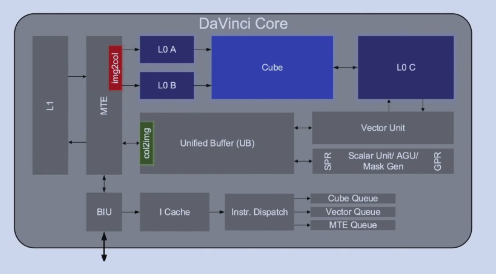
并行计算模块¶
Cube + Vector unit,scalar unit
aggressive custom computing unit
简化控制模块¶
多instruction queue管理，每个instruction queue顺序issue
Instr. dispatch -> cube/vector/MTE queue
指令间并行不属于优化重点
Global Buffer¶
L1,L0A,L0B,L0C,Unified Buffer(UB):分块使用、降低单位访存功耗，牺牲可编程性
stride -> set change
buffer vs. cache:能耗低、芯片面积小、手动管理
量化¶
quantization see NLP
GPU:FP8,FP16
TPU:INT8,Ascend:INT8(8-bit/16-bit)
专用编程语言DSA¶
转为高吞吐服务，不关心单一操作延迟，需要手动定义buffer，移动数据
DDR uint32_t a[32] = {0,1,2,...,31};
DDR uint32_t b[32] = {0,1,2,...,31};
DDR uint32_t c[32];
Unified_Buffer uint32_t a_ub[32];
Unified_Buffer uint32_t b_ub[32];
Unified_Buffer uint32_t c_ub[32];
Dma_Mov(a_ub,a);
Dma_Mov(b_ub,b);
Vector_add(c_ub,a_ub,b_ub);
Dma_Mov(c,c_ub);
Lecture 12: AI processors¶
深度学习加速器设计¶
减少内存访问¶
DRAM latency 200x ALU
solution:global buffer
减少global buffer访问¶
SRAM latency > FP32 multiply
global buffer access -> register utilization(data reuse)
TPU:weight stationary
output stationary
input stationary
->row stationary:global buffer filter一行
增加计算¶
计算模块的设计原则：尽可能多定制计算单元
例：1616矩阵乘法
c代码:16 16 16=4096 cycles;2rd,1/16wb each cycle(with cache)
vector:C[i][j]=A[i][:]*B[:][j],16 16=256 cycles;216rd,1wb each cycle
matrix:C[:][:]=A[:][:]*B[:][:],1 cycles;2 16 16rd,16 16wb,算力密度高但通用性极弱
常见AI加速器¶
华为Ascend¶
晟腾310推理芯片，910训练芯片
DaVinci Core:Cube(矩阵),Vector,Scalar
Cube:C=AB(16 16矩阵)，Accumulator,L0A/B/C buffer,A/B DFF,Accum DFF
Vector:L0C -> Unified Buffer,Vector
Scalar:Scalar unit,unified buffer or scalar buffer,GPR,SPR
Cube极致算力高；Buffer访问、管理效率高；硬核随路计算指令
难编程；生态不完善
Google TPU¶
v1:inference
systolic array:regular array of processing elements(PE) for loop
e.g. IF ID ADD-SUB-MUL MEM WB
2x2 systolic array(3x3=9 PEs,right=left,down=upper,cell=cell+upper*left) for matrix mul
T=O(n)
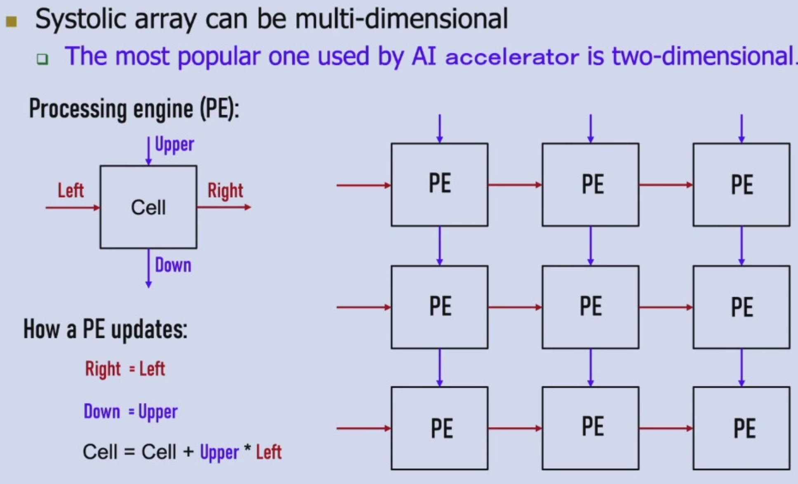
v2:support training(buffers -> single vector memory,fixed activation pipeline -> general purpose vector unit,MMU connected to vector memory -> vector unit,DDR3 -> HBM)
v3:support training + more computing power(2 matrix multiplication units)
v4:training,v4i:inference
v5/v6:TPU interconnect
推理加速器可以提高10倍以上能耗比，因为模型可以储存在aichip上，训练时不能显著提高，因为训练加速器不能将模型和中间结果都存在aichip上
大厂对训练极度谨慎，只有推理可以进行各类优化
Lecture 13: AI Chip + Runtime + Framework¶
寒武纪Cambricon¶
[goal] increase power ratio and programmability
single-core DLP(Deep Learning Processor)-S:
- control unit:simple control+register renaming
- IFU:address generator unit,inst cache,refill buffer,inst queue(out-of-order and SYNC between queue,in-order in queue)
- IDU:decoder,ALU,Issue Queue(control,compute,memory)
- compute unit
- VFU(Vector Fuction Unit)
- MFU(Matrix)
- Quantization
- SRAM unit
- WRMA(weight)
- NRAM(neuron)
- DMA
tensor dataflow:DRAM->NRAM->VFU(->MFU->VFU)->NRAM->DRAM
weight dataflow:DRAM->WRAM->MFU
execution flow:
1. IFU read from DRAM by DMA;IDU decode and send to DMA,VFU,MFU
2. DMA read tensor,read neuron from DRAM to NRAM,read weight to WRAM
3. VFU read nueron from NRAM,preprocess and send to MFU
4. MFU read nueron from VFU,weight from WRAM,compute matrix and send to VFU
5. VFU postprocess nueron
6. VFU write back NRAM
7. DMA write from NRAM to DRAM
DLP ISA:Matrix(MLOAD,MSTORE,MMOVE片上传输;MMV,VMM,MMS,OP,MAM,MSM),Vector(VLOAD,VSTORE,VMOVE;VAV,VSV,VMV,VDV,VEXP,VLOG,IP,RV,VMAX,VMIN;VGT,VE,VAND,VOR,VNOT,VGTM),Scalar(SLOAD,SSTORE,SMOVE;);JUMP,CB(conditional branch);
multi-core DLP-M:
- DLP-M <- DLP-C(cluster) <- DLP-S
- DLP-C:4 DLP-S，SMEM(shared memory),GDMA&CDMA(outside and inside communication)
homogeneous同构 architecture(Huawei and Nvidia易编程) vs. heterogeneous异构 architecture(Cambricon,fast inside DLP-C,slower between DLP-C，shared memory减少HBM访问)
Runtime¶
算子基本概念¶
[Definition] A layer between AI framework(mindspore,tensorflow,pytorch,...) and AI chips
CANN:Compute Architecture for Neural Network,CUDA:Compute Unified Device Architecture
NN operator library:Conv,Batchnorm,Scale,ReLU,Pad,...
1. NN tasks are composed of NN operators
2. AI chips are difficult to program
[goal] performance and usability
operator library:NN,BLAS(Basic Linear Algebra Subprograms),DVPP(Digital Video Pre-Processor),AIPP(AI Pre-Processing),HCCL(Huawei Collective Communication Library)
[Definition] tensor:a container that stores operator input and output data
|tensor|shape| |-------|-------| |1|(0,| |[1,2,3]|(3,| |[ [1,2],[3,4] ]|(2,2)| |[ [ [1,2],[3,4] ],[ [5,6],[7,8] ] ]|(2,2,2)|
shape = (4,20,20,3):4 photos,20*20 pixels,3 channels
format 4D:[Batch,Height,Width,Channels] = NHWC
算子开发方式¶
TBE(Tensor Boost Engine) operator:DSL & TIK(Tensor Iterator Kernel),AI CPU operator
晟腾CANN:SPMD编程范式 Ascend C
where is tensor?device memory
CANN平台¶
计算图引擎GE:图准备，图拆分，图优化，图编译，图加载，图执行
图优化：
重复计算->单次计算直接调取结果
算子融合：每个算子都从内存读取再计算完成放回
[insight] Conv2D,BatchNorm,Relu均为顺序读写 -> new operator:Conv2D_BatchNorm_Relu
UB融合：
1. task和data在片上上下文切换
2. 新的算子所需数据从主存搬运到unified buffer
3. vector读取UB中的数据进行算子1，2，3，...的计算，结果存回UB
4. 结果从UB搬出到主存
应用：attention
[Problem] 中间结果读写HBM;softmax串行执行
[Solution] flashattention:tiling
Framework¶
模型训练和推理框架：mindspore,pytorch,tensorflow,...
将算法中的常用操作封装成组件，提高开发效率和性能
Mindspore:自动并行；二阶优化；动静态图结合；AI+科学计算
二阶优化：二阶矩阵近似表达->矩阵降频->矩阵降维->高性能算子加速
动态图：调试调优，静态图：执行部署，set_context灵活切换
科学计算：NVIDIA cuBLAS、cuFFT基础数学库
Lecture 14: Parallel Training¶
AI system:computing,storage,networking,compiling
NN training:
1. randomly initialized weight
2. iterate mini-batch learning:forward pass,backward pass,weight update
forward pass:a minibatch of n(n>1) samples->matrix-matrix multiplication \(W*X=Y\)
compute loss
backward pass:layer weight gradient
back propogation:
- weight gradient \(dW=dY*X^\top\)
- activation gradient \(dX = W^\top * dY\)
weight update:SGD,momentum,adam \(W+dW=W\)
[problem] Read After Write(RAW):dependency of weight w
distributed training:larger models,larger dataset & accelerator memory size limitation(80GB/GPU)
data parallelism¶
each worker has a copy of model and is responsible for computing a portion of data
forward:cut X
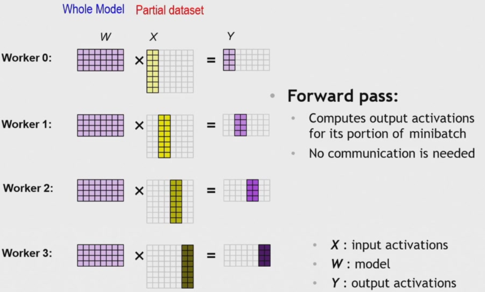
backward:computes gradient for its portion of minibatch
weight update:
1. each of N workers accumulates gradients:summing 1/N gradients
2. each worker updates its model with combined gradients from N workers
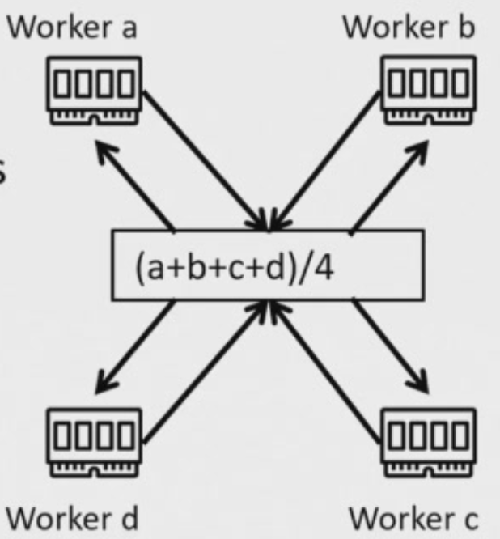
AllReduce¶
network:scale up & scale out
scale up:GPU内部高速互联,scale out:机器间互联，如以太网络
'Ring' AllReduce:1D torus/ring,each worker communicates with 2 neighbors
2(N-1) steps,a worker send/receive 1/N of all bytes
1. Reduce_scatter:N-1 rounds,M/N data per round
2. Allgather:N-1 rounds,M/N data per round
N = number of GPUs,M = data size
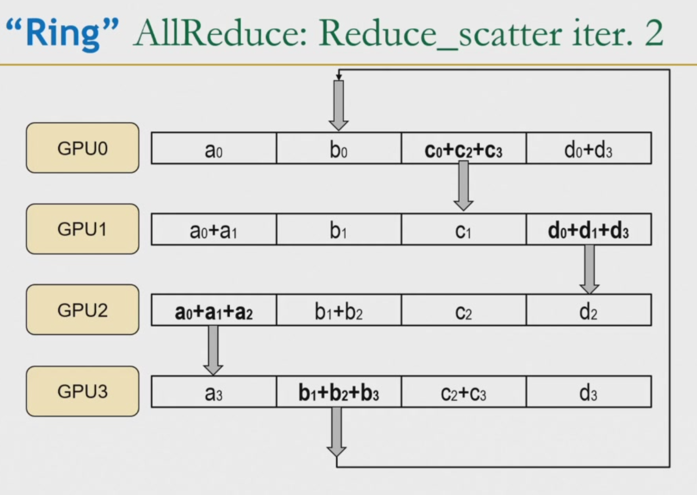
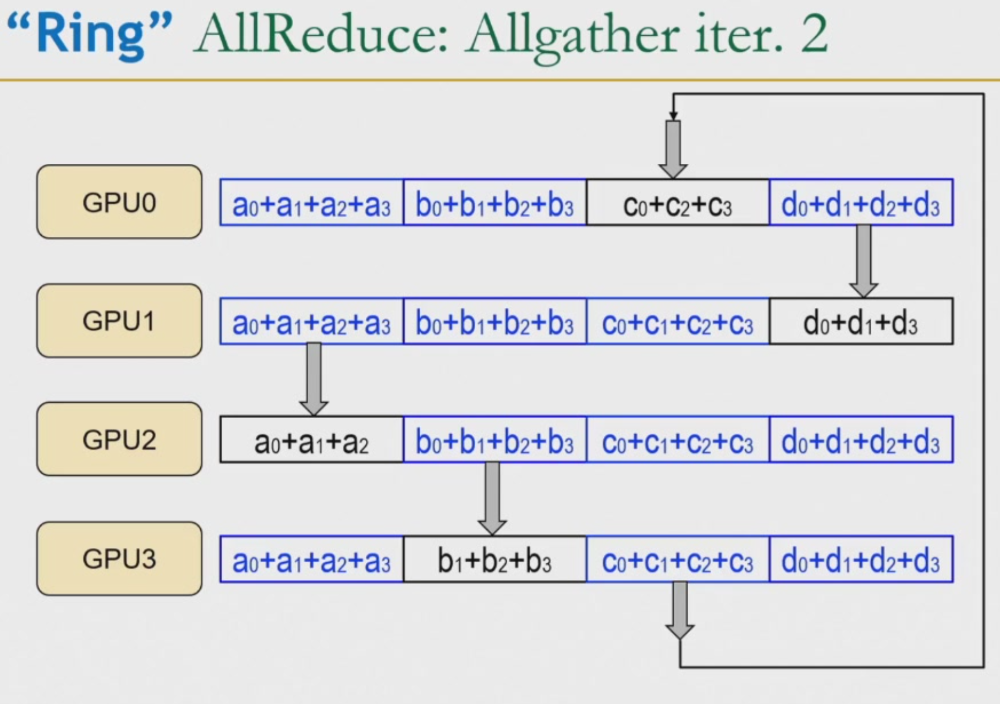
*'In switch' AllReduce:each worker communicates with the switch
challenges¶
workload(epoches) increasing with batch size
strong scaling:increase GPU number while maintaining minibatch size -> strong system
weak scaling:increase GPU number while increasing minibatch size -> a little weaker strong system
model parallelism¶
inter layer pipeline¶
a worker is responsible for its portion of layers,e.g. worker 0 for layer 1,2;worker 1 for layer 3,4
forward:worker0->1->2,loss,backward:worker2->1->0
idle bubbles:67%(N-1/N idle slots)
solution:subminibatches,cut minibatch into 2 subminibatches,after worker0 finishes computing the first subminibatch,worker1 can compute the first subminibatch while worker0 computes the second subminibatch
idle bubbles:50%
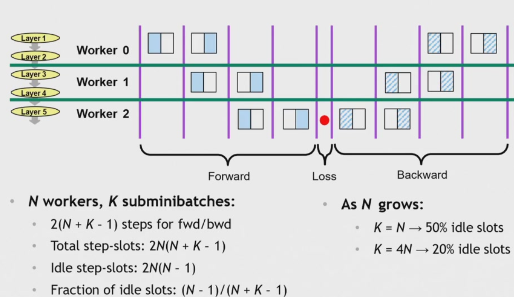
N workers,K subminibatches:
total step-slots:2N(N+K-1)
idle step-slots:2N(N-1)
fraction of idle slots:(N-1)/(N+K-1)
challenges:overlap communication is hard;load balancing workload is difficult;idle slots reduce scaling efficiency
intra layer(tensor parallelism)¶
a worker is responsible for its portion of each layer,e.g worker 0 for layer1.1,layer2.1,layer3.1;worker 1 for layer 1.2,layer2.2,layer3.2
partition a given layer's weights addresses idle slots,load imbalance but causes more communication costs
row-wise partitioning:an Allgather is needed between every two forward layers because each worker receives a portion of input w,all of input x and computes a portion of output y and the output y together is the next layer's x
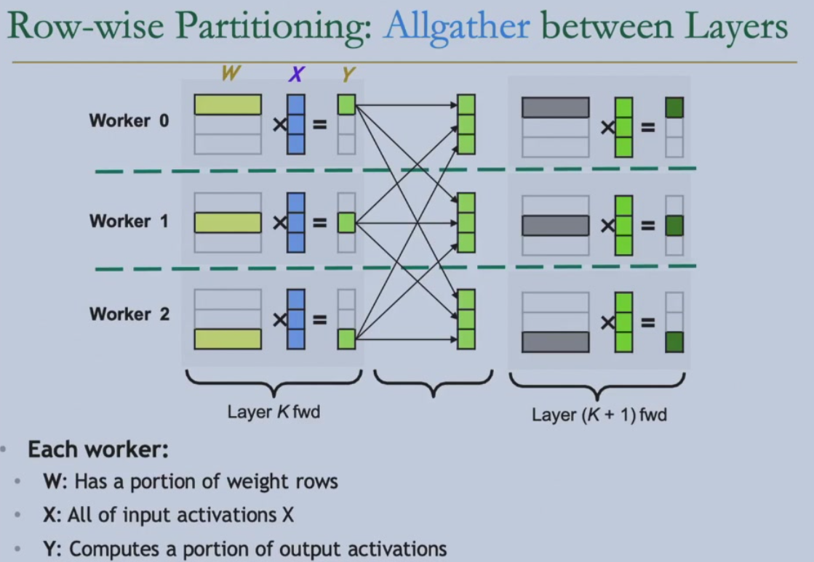
column-wise partitioning:a ReduceScatter is needed between every two forward layers
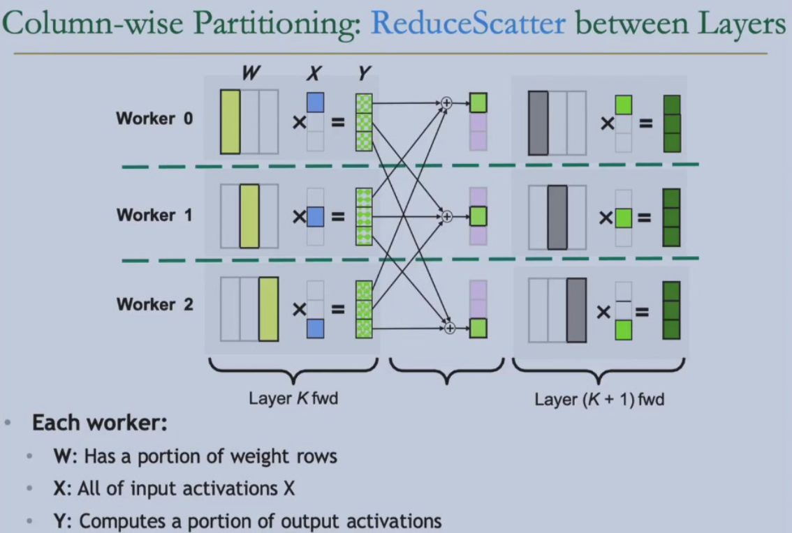
reducing synchronization by alternating partitioning:row-wise partitioning then column-wise paritioning,no communication is needed for two layers,only a communication AllReduce after the two layers,reduce half of the communication
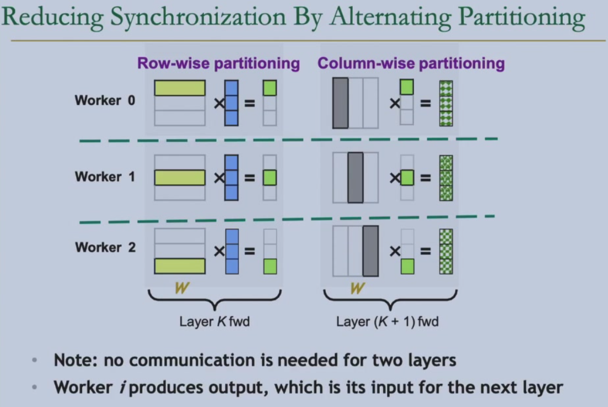
backward is the inverse of forward:row -> column,column -> row,Allgather -> ReduceScatter,ReduceScatter -> Allgather
Application:Transormer Block(Attention,MLP)
*Lecture 15: Flash Attention¶
Storage¶
ZeRO:Zero Redundancy Optimizer(See NLP:Lecture 8:DeepSpeed-Zero)
batch size limitation:how to choose parallel strategy?
1K NPU/GPU -> small batch size -> tensor parallelism(tp)
flash attention¶
normal attention is bounded by IO,low GPU utilization
flash attention:reduce IO,overlap of dropout,softmax,tensor core
naive attention \(O=softmax(QK^\top)V,Q_{S\times D},K_{S\times D}\)
- \(O(S^2)\)
- repeated reads/writes from GPU memory
- fp16 is low precision for softmax->safe softmax
- softmax is not a streaming algorithm->online softmax
softmax:\((\frac{e^{x_i}}{\sum_{j=1}^Ne^{x_j}})_{j=1}^N\)
safe softmax:\(m = max_{j=1}^N(x_j),(\frac{e^{x_i-m}}{\sum_{j=1}^Ne^{x_j-m}})_{j=1}^N\)
3-pass for max,sum and result respectively
for i=1,...,N do
m_i = max(m_{i-1}, x_i)
for i=1,...,N do
sum_i = sum_{i-1} + exp(x_i-mN)
for i=1,...,N do
a_i = exp(x_i-mN) / sum_N
for i=1,...,N do
m_i = max(m_{i-1},x_i)
sum_i = \sum_{j=0}^i exp(x_j-mi) = \sum_{j=0}^{i-1} exp(x_j-mi) + exp(x_i-mi) = sum_{i-1} * exp(m_{i-1-mi}) + exp(x_i-mi)
for i=1,...,N do
a_i = exp(x_i-mN) / sum_N
*flash attention-1¶
- tiling:block size weight computation
- inter-tile:batch size and heads parallelism->low parallelism
- intra-tile:outer-loop:K,V;inner-loop:Q->extra access to HBM from O
- recomputation:recompute the part needed during the backward pass instead of storing the full attention matrix
flash attention-2¶
- inter-tile:batch size and Q parallelism->high parallelism
- intra-tile:outer-loop:Q;inner-loop:K,V->no extra access to HBM
flash attention-3¶
[problem] serial execution of GEMM,softmax and HBM
[solution] warp specialization and intra-warpgroup overlapping
warp spcialization:producer(DMA)-consumer model,overlap of memory access and computation
intra-warpgroup overlapping:overlap softmax and GEMM
flash attention-4¶
deeper warp specialization for Blackwell GPU